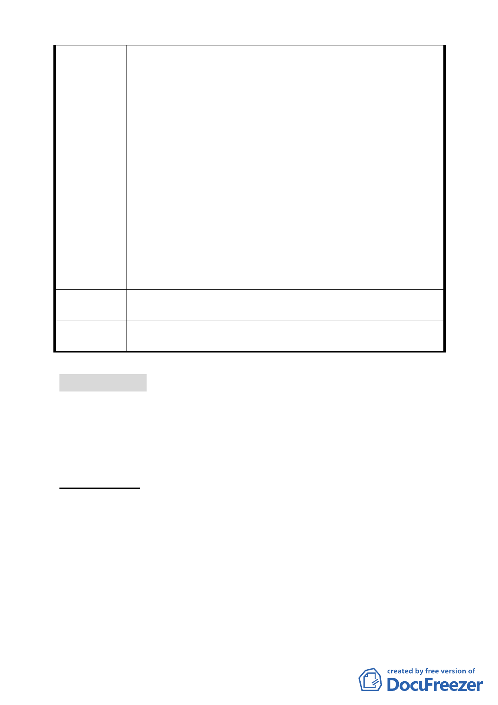

好看開發案」依92年公告之都市計畫審議，無視該地區通
檢之必要性。
(三)於99年2月11日第一次都委會就其土地及建築物之使用
限制既已達初步共識(如商業區 (供商業購物中心使用)
及娛樂區(供娛樂購物中心使用)申請住宅使用之樓地板
面積不得超過法定容積之二分之一、地面層l~3樓作指定
項目使用、高度不得超過90公尺±l0公尺…)，有否重行組
成小組會議，推翻前次大會審議共識之理？
五、民間企業配合政府政策推動「促進都市再生2010年臺北
好好看」開發案不應被視為盜匪，著眼良策混沌不明、投
資風險無法掌握，勢必將政府、產發學界及開發商、地主
先前努力付諸東流、回至原 點，不免陳情人等戒慎恐懼
必須正視問題提出拙見供相關單位慎量，以挽政府威信及
落實政策執行貫徹力。
六、敬祈鈞局酌參，俾維市府政策執行之貫徹及土地所有權
人合法權益。
陳請從速審查坐落臺北市中山區金泰段「促進都市再生 2010
建 議 辦 法 年臺北好好看」開發計畫案。
委員會決議
本案依申請單位興富發建設股份有限公司 99.7.14 來函，同意
其撤銷申請。
討論事項 十四
案名：修訂臺北市基隆河（中山橋至成美橋段）附近地區細部計
畫娛樂區（供娛樂購物中心使用）街廓編號 B2 基地（中山
區金泰段 16-2、16-3、16-6 地號）土地使用分區管制規定
與都市設計管制要點計畫案
案情概要說明：
一、 本計畫區位於街廓編號 B2 範圍內（計畫區位置詳第 12 頁圖
一）。面積 19876.14 平方公尺。使用分區為娛樂區（供娛樂
購物中心使用），建蔽率 60％、容積率 250％，土地權屬為
瓏山林企業股份有限公司、上哲投資有限公司、建友投資有
限公司。
二、計畫緣起暨申請人：本案係配合市府審查通過推薦「促進都
市再生 2010 年臺北好好看」開發計畫案（科技軸帶類），由
瓏山林企業股份有限公司依都市計畫法第 24 條研提之細部計
- 30 -